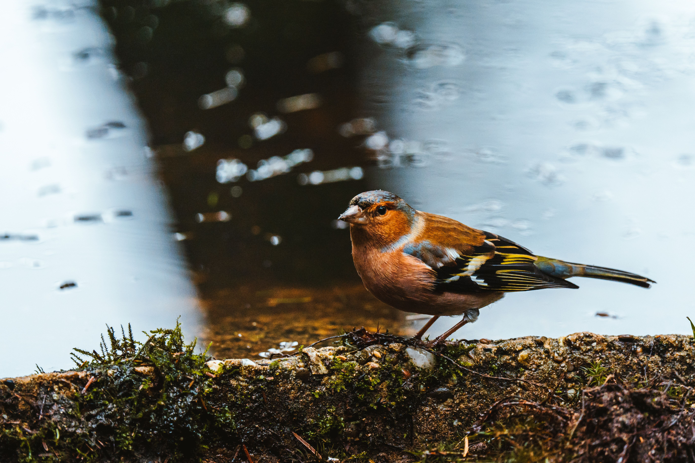

The Common Chaffinch is one of Europe's most familiar finches and is especially common in woodland, gardens, parks, farmland, and villages. Adult males have a blue-grey crown, pinkish-red underparts, chestnut back, and conspicuous white wing bars, while females and juveniles are more subdued brown and olive. Chaffinches feed mainly on seeds and other plant material, with insects becoming particularly important when adults feed their young. Their distinctive descending song is one of the characteristic sounds of spring in many parts of Europe. Compared with the European Greenfinch, the Chaffinch has a slimmer bill and much more strongly contrasting male plumage, while the Greenfinch is predominantly green and yellow. It differs from the European Goldfinch by lacking the red facial mask and yellow wing panels. Chaffinches often forage on the ground and can form mixed flocks with other finches outside the breeding season.